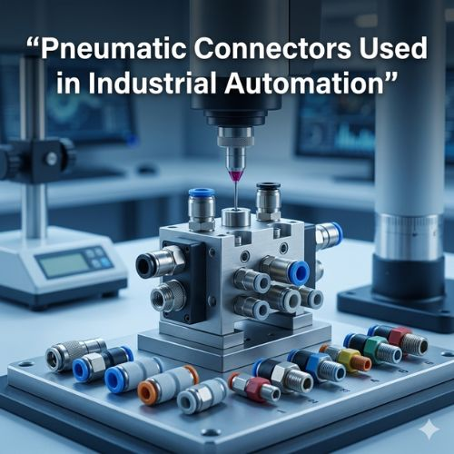

Industrial pneumatic connectors are specialized fittings designed to connect pneumatic tubes, pipes, and components within air-powered systems. Compressed air travels through tubing networks to operate different mechanical devices — and these connectors ensure that tubes and components remain securely linked while allowing air to flow without leakage. In automated manufacturing environments where machines run for long hours without interruption, pneumatic connectors must maintain strong sealing and structural reliability to prevent air loss, pressure drops, and system failure that directly increase maintenance costs and reduce productivity.
When reliable connectors are installed, the entire air network becomes stable and efficient — linking compressors to pipelines, pipelines to control valves, and valves to pneumatic actuators in one seamless, high-performance system.
Automation systems depend on compressed air to move robotic arms, control fluid flow through valves, and operate pneumatic actuators across machinery. Even a small air leak reduces system performance and increases energy consumption — which is why engineers prioritize high-quality connectors built to withstand industrial conditions. Connectors manufactured from stainless steel, brass, or advanced engineering alloys provide durability, corrosion resistance, and long service life. Material quality also directly influences safety: poor-quality connectors risk unexpected disconnections under pressurized air, threatening both equipment integrity and worker safety.
Automotive assembly lines use pneumatic connectors in robotic systems where pneumatic cylinders move parts with precision. Electronics manufacturing relies on stable air pressure for placing and assembling delicate components without damage. Food processing facilities use pneumatic automation for hygienic packaging, conveying, and processing — where contamination-free airflow is essential. Heavy machinery, pharmaceutical manufacturing, textile production, and packaging plants all depend on industrial pneumatic connectors to keep automated systems functioning efficiently under continuous operation and demanding industrial conditions.
Key design factors include correct connector sizing matched to tubing diameter for unrestricted airflow, high-performance sealing mechanisms for leak-free connections under high pressure, and ease of installation for minimal downtime during maintenance or upgrades. Reliable pneumatic connectors improve energy efficiency by reducing pressure losses, minimize maintenance requirements through durable airtight sealing, and protect long-term productivity across continuous production cycles. As industrial automation expands globally, new machining technologies are producing connectors with higher precision and improved sealing — meeting the increasing demands of faster, smarter manufacturing systems.
Attri Tech Machines Pvt. Ltd. is recognized as a global supplier and leading manufacturer exporter of industrial pneumatic connectors for advanced automation systems. With strong engineering expertise, modern manufacturing capabilities, and strict quality standards, the company produces connectors that deliver consistent reliability, secure sealing, and durable airflow performance — supplying industries across international markets with precision-engineered components that support modern industrial automation processes worldwide.
View Product Details at Attri Tech Machines